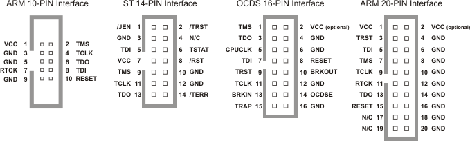

前言¶
Jtag是Joint Test Action Group的缩写，简单来说就是“在线测试和边界扫描”。常见的ARM、CPLD、FPGA都带有Jtag接口，可以用于更新固件，测试IC的IO功能。
本文主要是为了实现一个Jtag调试器，我自己也做过专用的Jtag调试器，但是为每个项目弄一个Jtag适配器太麻烦了，而且感觉是重复的工作，所以有个打算把它弄成通用的。目前开源的OpenOCD算是非常好的一个Jtag工具，但是总觉着用着麻烦，代码过于庞杂，修改起来比较麻烦。
其实如果只是实现一个Jtag适配器并不是很麻烦，但是要想没做过的人快速理解就比较难了，因为涉及到硬件的实现，所以本文会先介绍和Jtag相关的背景知识和技术，然后给出实现的方法，最后才是实现Jtag适配器。
目前的思路是先介绍CPLD，一是我用CPLD和FPGA比较多，二是CPLD相对FPGA简单一点，而且CPLD的配置是一项全面但不那么复杂的任务，所以这个切入点比较好。
由于自己基本只用过xilinx的器件，所以也就优先选择xilinx的产品来分析，而且xilinx的资料相对比较公开。
Jtag接口¶
Jtag一般包含4根线
- TCK（Test Clock）由调试器给到设备的测试时钟
- TMS（Test Mode State）由调试器给到设备的信号，用于切换TAP的状态
- TDI（Test Data Input）对于被测设备是数据输入，对于调试器是数据输出
- TDO（Test Data Output）对于被测设备是数据输出，对于调试器是数据输出
Jtag常见的用途是在线调试、固件下载。虽然标准中只规定了4线：TCK、TDI、TDO、TMS。
但是不同的厂家的接口线序不一样，而且TAP状态机的寄存器位数也不一样， 这直接导致各个下载线不兼容，每个开发板上ARM、FPGA的接口都不一样，而且每家的FPGA也不兼容。
这个是ulink的各种常见的接口定义
这个是xilinx的接口定义

本文档会优先完成CPLD的Jtag配置，然后再实现ARM的调试下载功能。

This work is licensed under a Creative Commons Attribution-NonCommercial-NoDerivatives 4.0 International License. And license of code is under GNU General Public License Version 3.
本著作係採用創用 CC 姓名標示-非商業性-禁止改作 4.0 國際 授權條款授權. 涉及到的代码使用 GNU通用许可证 第三版 授权.